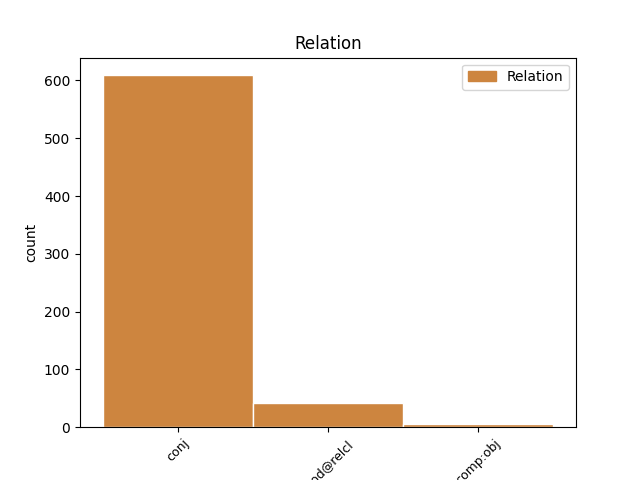
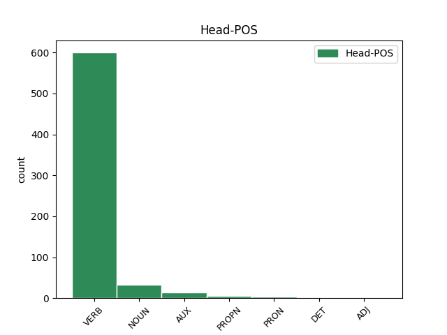
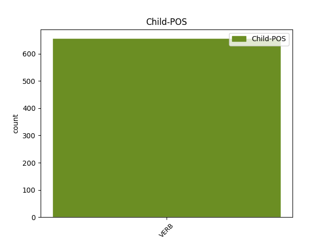

Distribution of features within this leaf



Agreement Rules sorted by frequency.
- When the dependent token is the conjunct(conj) of the head token, and the dependent token is VERB.
1 Żołnierze _ _ _ _ 0 _ _ _
2 okopali okopać VERB praet:pl:m1:perf Aspect=Perf|Gender=Masc|Mood=Ind|Number=Plur|SubGender=Masc1|Tense=Past|VerbForm=Fin|Voice=Act 0 _ _ _
3 się _ _ _ _ 0 _ _ _
4 tam _ _ _ _ 0 _ _ _
5 i _ _ _ _ 0 _ _ _
6 celnymi _ _ _ _ 0 _ _ _
7 strzałami _ _ _ _ 0 _ _ _
8 odpierali odpierać VERB praet:pl:m1:imperf Aspect=Imp|Gender=Masc|Mood=Ind|Number=Plur|SubGender=Masc1|Tense=Past|VerbForm=Fin|Voice=Act 2 conj _ _
9 atakujących _ _ _ _ 0 _ _ _
10 . _ _ _ _ 0 _ _ _
1 Żyje _ _ _ _ 0 _ _ _
2 dzięki _ _ _ _ 0 _ _ _
3 komuś ktoś PRON subst:sg:dat:m1 Case=Dat|Gender=Masc|Number=Sing|PronType=Ind|SubGender=Masc1 0 _ _ _
4 , _ _ _ _ 0 _ _ _
5 kto _ _ _ _ 0 _ _ _
6 rozumiał rozumieć VERB praet:sg:m1:imperf Aspect=Imp|Gender=Masc|Mood=Ind|Number=Sing|SubGender=Masc1|Tense=Past|VerbForm=Fin|Voice=Act 3 mod@relcl _ _
7 to _ _ _ _ 0 _ _ _
8 hasło _ _ _ _ 0 _ _ _
9 . _ _ _ _ 0 _ _ _
1 Potem _ _ _ _ 0 _ _ _
2 obserwował obserwować VERB praet:sg:m1:imperf Aspect=Imp|Gender=Masc|Mood=Ind|Number=Sing|SubGender=Masc1|Tense=Past|VerbForm=Fin|Voice=Act 0 _ _ _
3 już _ _ _ _ 0 _ _ _
4 , _ _ _ _ 0 _ _ _
5 jak _ _ _ _ 0 _ _ _
6 się _ _ _ _ 0 _ _ _
7 zbliżali zbliżać VERB praet:pl:m1:imperf Aspect=Imp|Gender=Masc|Mood=Ind|Number=Plur|SubGender=Masc1|Tense=Past|VerbForm=Fin|Voice=Act 2 comp:obj _ SpaceAfter=No
8 . _ _ _ _ 0 _ _ _
Disagree Examples:
1 A _ _ _ _ 0 _ _ _
2 kiedy _ _ _ _ 0 _ _ _
3 tak _ _ _ _ 0 _ _ _
4 się _ _ _ _ 0 _ _ _
5 stało stać VERB praet:sg:n:perf Aspect=Perf|Gender=Neut|Mood=Ind|Number=Sing|Tense=Past|VerbForm=Fin|Voice=Act 0 _ _ _
6 , _ _ _ _ 0 _ _ _
7 powstał powstać VERB praet:sg:m3:perf Aspect=Perf|Gender=Masc|Mood=Ind|Number=Sing|SubGender=Masc3|Tense=Past|VerbForm=Fin|Voice=Act 5 conj _ _
8 problem _ _ _ _ 0 _ _ _
9 ze _ _ _ _ 0 _ _ _
10 zdobyciem _ _ _ _ 0 _ _ _
11 odpowiednich _ _ _ _ 0 _ _ _
12 dowodów _ _ _ _ 0 _ _ _
13 . _ _ _ _ 0 _ _ _
1 - _ _ _ _ 0 _ _ _
2 Agatka _ _ _ _ 0 _ _ _
3 mówiła _ _ _ _ 0 _ _ _
4 , _ _ _ _ 0 _ _ _
5 że _ _ _ _ 0 _ _ _
6 to _ _ _ _ 0 _ _ _
7 ją _ _ _ _ 0 _ _ _
8 strasznie _ _ _ _ 0 _ _ _
9 bolało boleć VERB praet:sg:n:imperf Aspect=Imp|Gender=Neut|Mood=Ind|Number=Sing|Tense=Past|VerbForm=Fin|Voice=Act 0 _ _ _
10 , _ _ _ _ 0 _ _ _
11 ale _ _ _ _ 0 _ _ _
12 nie _ _ _ _ 0 _ _ _
13 mogła móc VERB praet:sg:f:imperf Aspect=Imp|Gender=Fem|Mood=Ind|Number=Sing|Tense=Past|VerbForm=Fin|Voice=Act 9 conj _ _
14 nawet _ _ _ _ 0 _ _ _
15 pisnąć _ _ _ _ 0 _ _ _
16 . _ _ _ _ 0 _ _ _
17 . _ _ _ _ 0 _ _ _
18 . _ _ _ _ 0 _ _ _
1 Ale _ _ _ _ 0 _ _ _
2 już _ _ _ _ 0 _ _ _
3 nie _ _ _ _ 0 _ _ _
4 zdążyli zdążyć VERB praet:pl:m1:perf Aspect=Perf|Gender=Masc|Mood=Ind|Number=Plur|SubGender=Masc1|Tense=Past|VerbForm=Fin|Voice=Act 0 _ _ _
5 , _ _ _ _ 0 _ _ _
6 na _ _ _ _ 0 _ _ _
7 pozostałym _ _ _ _ 0 _ _ _
8 kawałku _ _ _ _ 0 _ _ _
9 lądowały lądować VERB praet:pl:f:imperf Aspect=Imp|Gender=Fem|Mood=Ind|Number=Plur|Tense=Past|VerbForm=Fin|Voice=Act 4 conj _ _
10 niemieckie _ _ _ _ 0 _ _ _
11 dywizje _ _ _ _ 0 _ _ _
12 pancerne _ _ _ _ 0 _ _ _
13 . _ _ _ _ 0 _ _ _
1 Ale _ _ _ _ 0 _ _ _
2 kiedy _ _ _ _ 0 _ _ _
3 wymagało wymagać VERB praet:sg:n:imperf Aspect=Imp|Gender=Neut|Mood=Ind|Number=Sing|Tense=Past|VerbForm=Fin|Voice=Act 0 _ _ _
4 by _ _ _ _ 0 _ _ _
5 to _ _ _ _ 0 _ _ _
6 przekroczenia _ _ _ _ 0 _ _ _
7 granic _ _ _ _ 0 _ _ _
8 prawa _ _ _ _ 0 _ _ _
9 , _ _ _ _ 0 _ _ _
10 Bill _ _ _ _ 0 _ _ _
11 powstrzymał powstrzymać VERB praet:sg:m1:perf Aspect=Perf|Gender=Masc|Mood=Ind|Number=Sing|SubGender=Masc1|Tense=Past|VerbForm=Fin|Voice=Act 3 conj _ _
12 się _ _ _ _ 0 _ _ _
13 z _ _ _ _ 0 _ _ _
14 pomocą _ _ _ _ 0 _ _ _
15 . _ _ _ _ 0 _ _ _
1 Ale _ _ _ _ 0 _ _ _
2 po _ _ _ _ 0 _ _ _
3 pierwsze _ _ _ _ 0 _ _ _
4 czuł czuć VERB praet:sg:m1:imperf Aspect=Imp|Gender=Masc|Mood=Ind|Number=Sing|SubGender=Masc1|Tense=Past|VerbForm=Fin|Voice=Act 0 _ _ _
5 się _ _ _ _ 0 _ _ _
6 głęboko _ _ _ _ 0 _ _ _
7 skompromitowany _ _ _ _ 0 _ _ _
8 , _ _ _ _ 0 _ _ _
9 a _ _ _ _ 0 _ _ _
10 po _ _ _ _ 0 _ _ _
11 drugie _ _ _ _ 0 _ _ _
12 wydawało wydawać VERB praet:sg:n:imperf Aspect=Imp|Gender=Neut|Mood=Ind|Number=Sing|Tense=Past|VerbForm=Fin|Voice=Act 4 conj _ _
13 się _ _ _ _ 0 _ _ _
14 wątpliwe _ _ _ _ 0 _ _ _
15 , _ _ _ _ 0 _ _ _
16 żeby _ _ _ _ 0 _ _ _
17 mógł _ _ _ _ 0 _ _ _
18 jeszcze _ _ _ _ 0 _ _ _
19 coś _ _ _ _ 0 _ _ _
20 w _ _ _ _ 0 _ _ _
21 tamtym _ _ _ _ 0 _ _ _
22 środowisku _ _ _ _ 0 _ _ _
23 osiągnąć _ _ _ _ 0 _ _ _
24 . _ _ _ _ 0 _ _ _